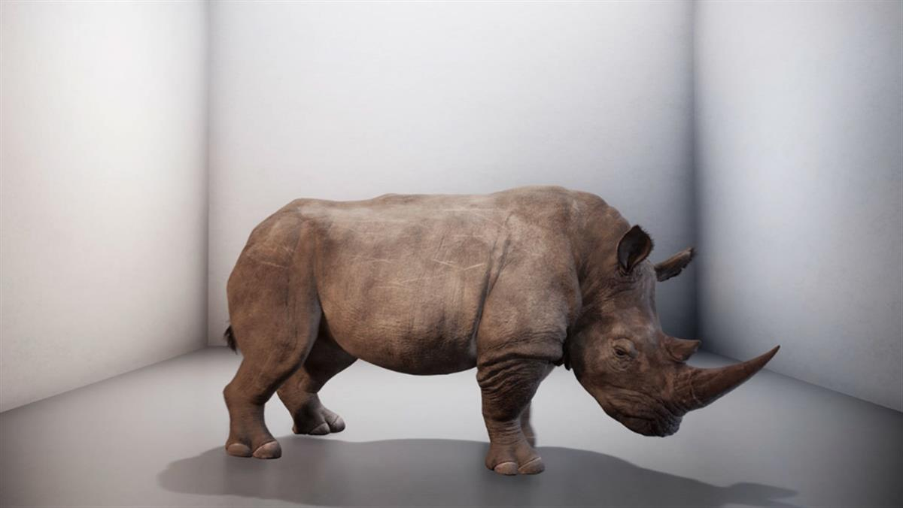
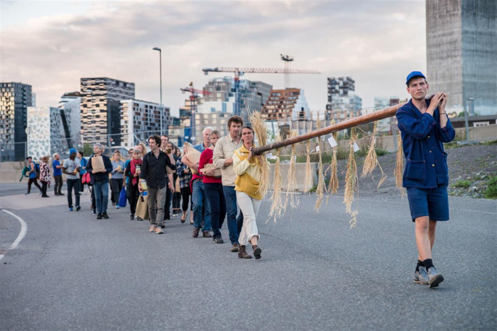
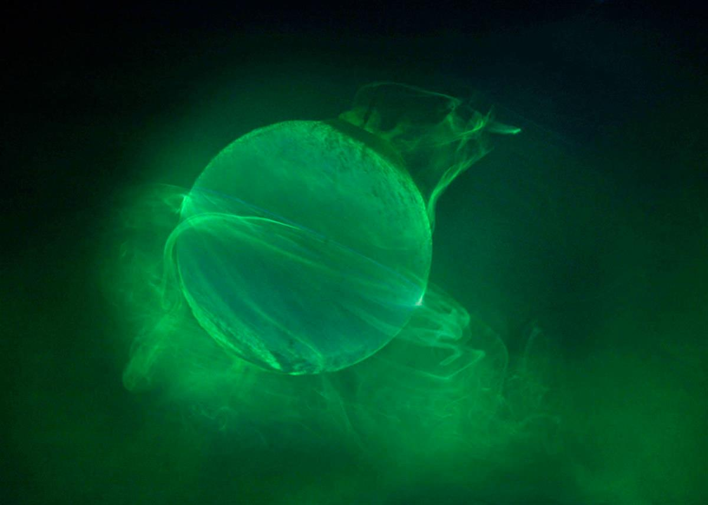

Unknown Fields,The Breast Milk of the Volcano (video still), 2016-2018
Unknown Fields,The Breast Milk of the Volcano (video still), 2016-2018
Video, sound, colour; 10 minutes. In association with the Architectural Association. Courtesy of the artists.
Eco-Visionaries
Confronting a planet in a state of emergency
23 November 2019 — 23 February 2020
The Gabrielle Jungels-Winkler Galleries, Burlington Gardens, Royal Academy of Arts
SOURCE: THE ROYAL ACADEMY
Discover how architects, artists and designers are responding today to some of the most urgent ecological issues of our times.
From climate change to species extinction and resource depletion, the damaging effects of modern life are more tangible than ever. Eco-Visionaries examines humankind’s impact on the planet and presents innovative approaches that reframe our relationship with nature. Through film, installation, architectural models and photography, the works in this exhibition interrogate how architecture, art and design are reacting to a rapidly changing world, beyond mainstream notions of sustainability.
In the 1950s, scientists started raising serious concerns about the damaging effects of modern life on the environment. Since then, architects, designers and artists have joined the urgent effort to draw attention to the planet’s fragile and endangered ecosystem.
This timely exhibition brings together international practitioners including Olafur Eliasson Hon RA, Ant Farm, Alexandra Daisy Ginsberg, Andrés Jaque, Tue Greenfort, Unknown Fields, Rimini Protokoll, New Territories (S/he), Virgil Abloh and WORKac, amongst others. Their provocative responses are a wake-up call, urging us to acknowledge and become conscious of our impact on our environment.
Eco-Visionaries is a project initiated by Fundação EDP/MAAT (Lisbon, Portugal), Bildmuseet (Umeå, Sweden), HeK (Basel, Switzerland) and LABoral (Gijón, Spain), in collaboration with the Royal Academy of Arts (London, UK) and Matadero Madrid (Madrid, Spain).
-
Participants in the exhibition
-
HeHe
Ana Vaz and Tristan Bera
Tue Greenfort
Carolina Caycedo
Nerea Calvillo / In the Air
Olafur Eliasson Hon RA
Virgil Abloh - Unknown Fields
Alexandra Daisy Ginsberg
Pinar Yoldas
Basim Magdy
Dunne & Raby
New-Territories (S/he)
Ant Farm - Andrés Jaque / Office for Political Innovation
Futurefarmers
Philippe Rahm Architectes
Studio Malka Architecture
Rimini Protokoll
WORKac
SKREI

Alexandra Daisy Ginsberg,The Substitute (video still), 2019.Visualisation by The Mill. © Alexandra Daisy Ginsberg.

Futurefarmers,Seed Procession. Part of Seed Journey, 2016 – ongoing, 2016.Photograph by Monica Lovdahl. Courtesy of Futurefarmers.

HeHe,Domestic catastrophe Nº3: Laboratory Planet, 2012.video still, HD video. 2:59. © HeHe.
SOURCE: THE ROYAL ACADEMY